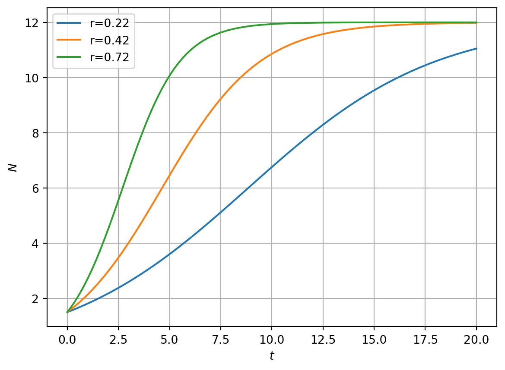
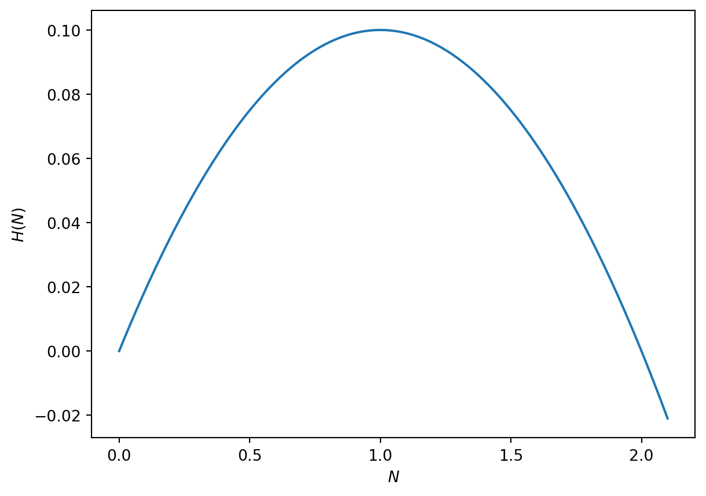
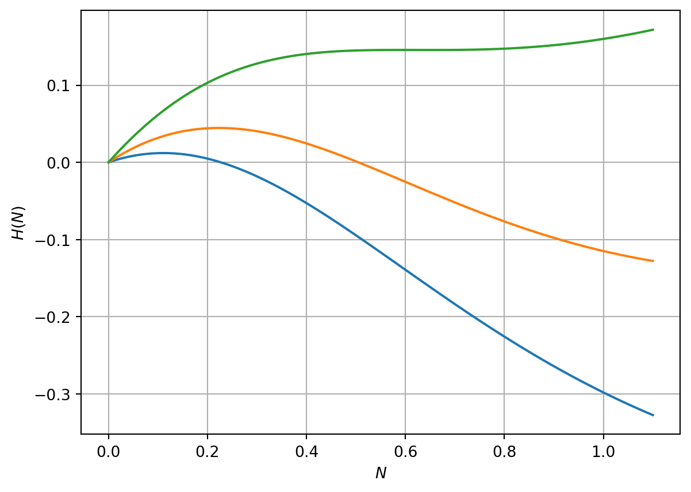
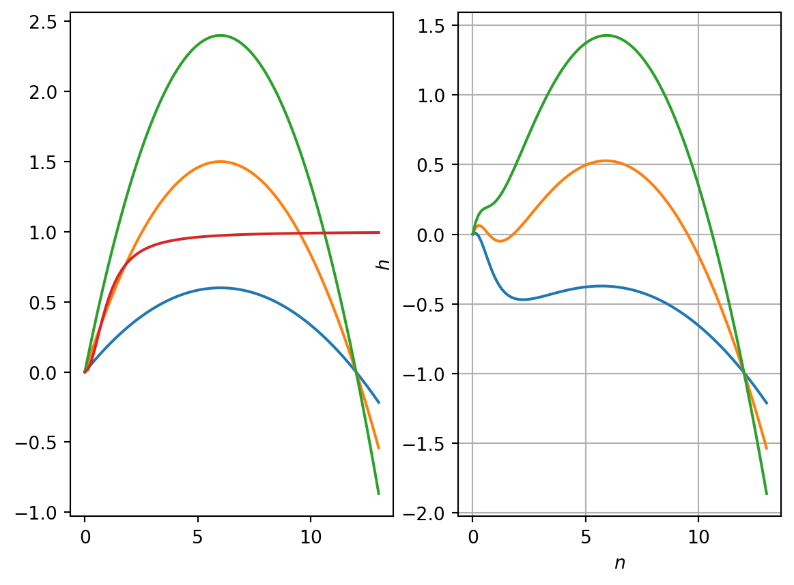

In this chapter we define time, \(t\), to be a continuous variable and the population density, \(N(t)\), to represent the size of a given population.
3.1 The Malthusian (linear) model
3.1.1 Deriviation
As time is now a continuous variable, we consider an interval of time \(\delta t\). Consider a population of size \(N(t)\). If the per capita production rate is \(b\), then in time \(\delta t\) the increase in population size will be \[
b N(t) \delta t.
\] Similarly, if the per capita death rate is \(d\), the decrease in population size in time \(\delta t\) will be \[
d N(t) \delta t.
\] Hence \[
N(t+\delta t)= N(t) + (bN(t)-dN(t))\delta t.
\] Rearranging and taking the limit as \(\delta t \rightarrow 0\) yields \[
\frac{dN}{dt}=(b-d)N=rN(t).
\]
3.1.2 Solution
The solution is given by \[
N(t)=N_0\exp(rt).
\]
We can describe qualitatively different solutions behaviours.
If \(r>0\) the solution increases exponentially with time. If \(r<0\) it decreases exponentially. When \(r=0\) the solution is constant.
Malthusian growth in the continuous time model leads to either a constant population, exponentially increasing or exponentially decreasing growth. As was the case for the discrete time model, such a model could account for biological system only in particularly limited circumstances.
The Malthusian model (constant per capita growth rate) can exhibit a limited range of behaviour. To account for limitation of population growth at large population densities due to, for example, limited resources, we consider nonlinear per capita growth rates.
3.2 Tools for analysing the dynamics of a single population in continuous time
Let \(N=N(t)\). We consider the general form for a single species model defined in continuous time \[
\frac{dN}{dt}=f(N)N=H(N),
\tag{3.1}\] where \(f\) is the per capita growth rate and \(H\) is the net growth rate.
3.2.1 Numerical solution
Although an equation of the form Equation 3.1 may not be explicitly integrable, so long as the right-hand side is sufficiently well behaved, we can numerically integrate the problem (e.g. using packages such as Python’s odeint). Such a technique provides a numerical approximation to the exact solution, given specific values of model parameters and initial conditions (i.e. we can graph solutions).
3.2.2 Nondimensionalisation
We nondimensionalise a model by changing from variables that have dimensions (both dependent and independent) to variables that are dimensionless.
3.2.2.1 Dimensional analysis
The dimensions/units of each term in a model must be consistent. This observation helps to determine the units of different parameters in a model.
For example, we can deduce that the units of the parameter \(r\) in the Malthusian model \[
\frac{dN}{dt}=rN.
\]
The units of the left-hand term are \[
\frac{\# pop density}{\# time}.
\]
The units of the term on the right-hand side are \[
\#r\#popdensity.
\]
For dimensional consistency \[
\#r = \frac{1}{\#time}.
\]
3.2.2.2 Dimensionless variables
We could nondimensionalise Equation 3.1 by defining the dimensionless variables \[
\begin{aligned}
n=\frac{N}{\tilde{N}} \nonumber \\
\tau=\frac{t}{\tilde{T}}.\nonumber
\end{aligned}
\]
Making the proposed change of variables in Equation 3.1 we obtain the dimensionless model \[
\frac{dn}{d\tau}= \frac{\tilde{T}}{\tilde{N}}H(\tilde{N}n(\tau)).
\] The choice for scalings is in general not unique (i.e. \(N^*\) and \(T^*\)). Appropriate choices can result in fewer dimensionless parameters in the dimensionless model.
Exercise: Show that the Mathusian model \[
\frac{dN}{dt}=rN
\] can be written in nondimensional form \[
\frac{dn}{d\tau}=n.
\]
We denote steady-state solutions of Equation 3.1 using \(N=N^*\). At a steady-state, \[
\frac{dN}{dt}=0
\] and hence steady-states can be obtained by solving the algebraic equation \[
H(N^*)=0.
\]
3.2.4 Linear stability analysis
3.2.4.1 A change of dependent variable
To perform a linear stability analysis we make the change of variables \[
N(t)=N^*+\hat{N}(t)
\] where the new dependent variable, \(\hat{N}(t)\), is a perturbation about the steady state.
The time derivative on the left-hand side of Equation 3.1 transforms to \[
\frac{dN}{dt}= \frac{d }{dt} (N^*) + \frac{d }{dt}(\hat{N}(t))=\frac{d\hat{N}(t) }{dt}.
\] Hence Equation 3.1 transforms to \[
\frac{d\hat{N}(t) }{dt} = H(N^*+\hat{N}(t)).
\]
3.2.4.2 Taylor expansion and a linear system
Employing the Taylor expansion on the right-hand side of Equation 3.1 and making the assumption that perturbations are small \[
\frac{d\hat{N}(t) }{dt} = H(N^*)+ H'(N^*)\hat{N}(t) + H''(N^*)\hat{N}^2(t) + h.o.t.
\] Noting that \[
H(N^*)=0
\] and retaining linear terms yields \[
\frac{d\hat{N}(t) }{dt} = H'(N^*)\hat{N}(t)
\] with solution \[
\hat{N}(t)= \eta e^{H'(N^*) t}
\] where \(\eta\) is some initial perturbation about the steady-state.
3.2.4.3 A condition for linear stability
When \(H'(N^*)>0\) the perturbation grows exponentially fast and the steady-state is unstable. When \(H'(N^*)<0\) the perturbation decays exponentially fast and the steady-state is stable.
3.2.5 Graphical solution
We can graphically identify steady-states and their stability by plotting \(dN/dt\) against \(N(t)\). Steady-states arise at the roots of \(H(N)\). The sign of the derivative at a root determines its linear stability.
3.2.6 Bifurcation diagrams
Bifurcations arise when the number of solutions or their stability changes at a given value of a model parameter. By plotting the steady state solutions against a model parameter and using annotation to represent stability of solutions we can obtain a bifurcation diagram.
As an exercise perform a qualitative analysis of the Malthusian model.
3.3 The logistic growth model
3.3.1 Model development
Let \(N=N(t)\). The logistic model, due to Verhulst, takes the form \[
\frac{dN}{dt}=rN(t)\left (1-\frac{N(t)}{K}\right),
\tag{3.2}\]
where \(r\) is the linear growth rate and \(K\) is carrying capacity. We consider both \(r,K\in \Re^+\).
Questions to ask of such a model are: what type of biologically realistic solutions does it possess? Are there steady-states? If so, are they stable or unstable? Are there bifurcations in solutions?
3.3.1.1 Numerical solutions
In Figure 3.1 we present numerical solutions of equation using different initial conditions. Note the limiting behaviour of solutions as \(t\rightarrow \infty\). In Figure 3.1 it is clear that even though some solutions are initialised at \(N_0=0.1\), much closer to \(N^*=0\) than \(N^*=K\), they tend to the limit \(N=K\). Why do solutions not tend to \(N^*=0\)?
Code
import numpy as npimport matplotlib.pyplot as pltimport scipyfrom scipy.integrate import odeintN_max=1.1N_0=0.1K=12r_1=0.22r_2=0.42r_3=0.72T=20n_0=1.5n_vec=np.linspace(0,N_max,100)def rhslogistic_model(x,t,r,K): rhs=r*x*(1-x/K)return rhst=np.linspace(0,T,100)sol1=odeint(rhslogistic_model,n_0,t,args=(r_1,K))sol2=odeint(rhslogistic_model,n_0,t,args=(r_2,K))sol3=odeint(rhslogistic_model,n_0,t,args=(r_3,K))fig, ax = plt.subplots(1)ax.plot(t, sol1,t, sol2,t, sol3)plt.xlabel('$t$')plt.ylabel('$N$')plt.grid(True)plt.legend(['r='+str(r_1),'r='+str(r_2),'r='+str(r_3)])plt.show()

Figure 3.1: RHS of spr. budworm model
3.3.1.2 Dimensional analysis and nondimensionalisation
\(N\) represents the population density and has units of one over area (say \(1/m^2\)) and \(t\) has units of time (say, seconds, \(s\)). Hence the left-hand side of Equation 3.2 has units of \(1/(m^2 s)\). The first term on the right-hand side of Equation 3.2 is \(rN\). \(N\) has units \(1/m^2\) hence the parameter \(r\) must have units of \(1/s\) for dimensional consistency. This is consistent as \(r\) represents the linear growth rate.
The second term has the form \(rN^2/K\). Given the chosen units for \(r\) and \(N\), the parameter \(K\) must have dimensions \(1/m^2\). Again, this is consistent as \(K\) is a carrying capacity (i.e. it has units of population density).
We define the nondimensionalised variables \[
n=\frac{N}{\tilde{N}} \ \ \ \ \ \ \tau=\frac{t}{\tilde{T}}
\] where \(\tilde{N}\) and \(\tilde{T}\) are constants that have units of population density and time, respectively. Hence Equation 3.2 transforms, upon change of variables, to \[
\begin{aligned}
\frac{\tilde{N}}{\tilde{T} }\frac{dn}{d\tau}=r\tilde{N}n(1-\frac{n\tilde{N}}{K}).
\end{aligned}
\]
In the case of the logistic equation there is only one time scale and density scale in the problem, hence we choose \[
\tilde{T}=\frac{1}{r} \ \ \ and \ \ \ \tilde{N}=K
\] and the dimensionless model is \[
\begin{aligned}
\frac{dn}{d\tau}= n(1-n)
\end{aligned}
\tag{3.3}\] Note that we can retrieve the original equation by rescaling and calculating \(N=\tilde{N}n\) and \(t=\tilde{T}\tau\).
To determine linear stability we compute \[
H'(n)= (1-2n).
\] When \(n=n^*=0\) we obtain \[
H'(n)= 1.
\] Hence the origin is an unstable steady-state.
At the steady-state \(n^*=1\)\[
H'(n^*)= -1
\] hence \(n^*=1\) is linearly stable.
Note that the linear stability analysis can explain the observations regarding the numeric solutions presented in Figure 3.1.
3.3.3 Graphical analysis
In Figure 3.2 we plot the right-hand side of Equation 3.3. We can qualitatively describe model solutions by considering the arrow along the x axis. Suppose we consider an initial condition with \(0<n_0<1\). Using the graph of \(H(n)\), \(dn/d\tau\) is positive, hence \(n\) increases as a function of time until \(n(\tau)\rightarrow 1\).
Code
import numpy as npimport matplotlib.pyplot as pltN_max=2.1K=2r=0.2N_vec=np.linspace(0,N_max,100)rhs=r*N_vec*(1-N_vec/K)fig, ax = plt.subplots(1)ax.plot(N_vec, rhs)plt.xlabel('$N$')plt.ylabel('$H(N)$')plt.show()

Figure 3.2: Right-hand side of the logistic ODE
3.3.4 An exact solution
Separation of variables yields \[
\int\frac{ dN}{N(1-\frac{N}{K})}=r\int dt.
\] Using partial fractions \[
\int\frac{ dN}{N} + \frac{1}{K}\int\frac{ dN}{1-\frac{N}{K}}=r\int dt.
\] Integration yields \[
\ln N - \ln\left(1-\frac{N}{K}\right)= \ln \frac{N }{1-\frac{N}{K}} = rt+C.
\] Hence \[
N=\frac{De^{rt}}{1+\frac{D}{K}e^{rt}}
\] Given an initial condition \(N(0)=N_0\), we obtain \[
N(t)=\frac{N_0K e^{rt}}{K+N_0(e^{rt}-1)}
\]
3.3.4.1 Qualitative analysis of the exact solution
As \(t\rightarrow \infty\), \(N\rightarrow K\). At \(t=0\), \(N=N_0\) and that for small \(N_0\ll K\) the initial growth phase is exponential, i.e. \[
N(t)\sim N_0 e^{rt} \\ \ \ \ \ N_0\ll K, t\ll \frac{1}{r}.
\]
Note that in almost all the models that we will consider the above method is not an usually an option as the ODE is not explicitly integrable.
3.4 The spruce budworm model
The spruce budworm is a destructive and widely distributed forest defoliator in North America. Massive outbreaks occur periodically and can destroy large quantities of valuable spruce and fir. To understand the outbreak behaviour and develop and management strategies, a series of mathematical models have been developed, beginning with Ludwig et al. (1978). The goal of the models is to explain the qualitative pattern of sudden outbreaks and then a sudden collapse.
3.4.1 Model development
Letting \(N(t)\) represent the population size at time \(t\), it is assumed that budworm exhibits logistic growth and is subject to predation at rate \(p(N)\). A governing ordinary differential equation is given by \[
\frac{dN }{dt}= r_B N\left(1-\frac{N}{K_B}\right)-p(N),
\tag{3.4}\] where \[
p(N) =\frac{B N^2}{A^2 +N^2},
\]\(r_B\) is the linear growth rate, \(K_B\) is the carrying capacity, \(B\) is the maximum rate of predation and \(A\) is a measure of budworm population where predation switches on (specifically, \(A\) represents the budworm density at which predation is half its maximum value).
It is informative to graph the predation term \[
p(N) =\frac{B N^2}{A^2 +N^2},
\] and annotate the parameters \(A\) and \(B\).
There is a root at \(N=0\). In the limit \(N\rightarrow \infty\), \(p \rightarrow B\). Note that \(N=A\), \(p=A/2\). The derivative is \[
p'(N)=\frac{2BN}{A^2+N^2} - \frac{2BN^3}{(A^2+N^2)^2} = \frac{2BA^2N}{(A^2+N^2)^2}
\] Thus there is a turning point at \(N=0\) and \(p'>0 \forall N>0\).
3.4.2 Nondimensionalisation
Introducing the (as yet unspecified) dimensional scalings \(\tilde{N}\) and \(\tilde{T}\), the model is nondimensionalised as follows
A natural scale for cell density in the model is given by the parameter \(A\), as it determines the density of budworm at which predation is half its maximal value. Hence we choose the scaling on the budworm density \[
\tilde{N}=A.
\] Similarly, a natural time scale for the model is given by \[
\tilde{T}=A/B.
\]
Substituting for \(\tilde{N}\) and \(\tilde{T}\) yields \[
\frac{dn }{d\tau}= rn\left(1-\frac{n}{q}\right)-\frac{n^2}{1+n^2} = H(n),
\tag{3.5}\] where we define the nondimensional parameters \[
r= \frac{r_B A}{B} \ \ \ \textrm{and} \ \ \ q=\frac{K_B}{A}.
\]
Note that Equation 3.5 has two nondimensional parameters and all variables are dimensionless. See Figure 3.3 for a plot of right-hand side of equation Equation 3.5. What kind of behaviours do you expect to see from the model?
Code
import numpy as npimport matplotlib.pyplot as pltimport scipyfrom scipy.integrate import odeintN_max=1.1N_0=0.1q=12r_1=0.22r_2=0.42r_3=0.72n_vec=np.linspace(0,N_max,100)def rhssprucebudworm_model(x,t,r,q): rhs=r*x*(1-x/q) - x**2/(1+x**2)return rhsdef rhssprucebudworm_model_f(x,t,r,q): f=r*x*(1-x/q) return f def rhssprucebudworm_model_g(x,t,r,q): g=x**2/(1+x**2)return g rhs1=rhssprucebudworm_model(n_vec,0,r_1,q)rhs2=rhssprucebudworm_model(n_vec,0,r_2,q)rhs3=rhssprucebudworm_model(n_vec,0,r_3,q)fig, ax = plt.subplots(1)ax.plot(n_vec, rhs1,n_vec, rhs2,n_vec, rhs3)plt.xlabel('$N$')plt.ylabel('$H(N)$')plt.grid(True)plt.show()

Figure 3.3: RHS of spr. budworm model
3.4.3 Numerical solutions
In Figure 3.4 we plot some numerical solutions of Equation 3.5 at different values of the parameter \(r\).
Numerical solutions of Equation 3.5 indicate that there is a single stable steady state when \(r\) is both small and large but for intermediate values of \(r\) there are two stable steady states.
Our goal is to analyse the model and understand why different parameter values yield these strikingly different model behaviours.
Figure 3.4: Numerical solution of spr. budworm model
3.4.4 Steady state analysis
Letting \(n^*\) represent steady states of Equation 3.5 yields \[
rn^*(1-\frac{n^*}{q})- \frac{n^*{^2}}{1+n^*{^2}}=0.
\] Hence either \[
n^*=0,
\] or \(n^*\) satisfies the cubic equation \[
r\left(1-\frac{n^*}{q}\right)- \frac{n^*}{1+n^*{^2}}=0.
\]
Explicit solutions to such a cubic can be immediately written down but they are cumbersome to work with. We proceed using a graphical/qualitative approach.
Roots occur for values of \(n^*\) that satisfy \(f=g\).
In Figure 3.5 (a) we fix the parameter \(q=10\) and consider model behaviour as a function of the parameter \(r\). When \(r\gg1\) there is a nonzero steady-state corresponding to \(n^*\gg 1\). When \(r\ll1\) there is a nonzero steady-state corresponding to \(n^*\ll 1\). In the intermediate case there can be three intersection points.
We can use the curve sketching techniques form Tutorial Sheet 1 to sketch \(f\) and \(g\).
\(f\) is linear. There is a root at \(n^*=q\). The derivative is \(-r/q\). \(f(0)\)=r. \(g\) has a unique root at \(n^*=0\). The derivative is \[
g'=\frac{1-n{^*}^2}{(1+n^*)^2}.
\] There is a turning point at \(n^*=1\). Here \(g=1/2\). As \(n^*\rightarrow \infty\), \(g\rightarrow 0\). \(f'(0)=1\).
3.4.5 Linear stability analysis
The linear stability of the model is determined by the quantity \[
H'(n)=r(1-\frac{2n}{q})-\frac{2{n}}{1+{n}^2} +\frac{2{n}^3}{(1+{n}^2)^2}.
\]
Hence at the steady state \(n^*=0\)\[
H'(0)=r
\] and the steady state is linearly unstable.
Given the nonzero steady states have not been calculated explicitly, we proceed using graphical analysis of stability. In Figure 3.5 (b) we plot the right-hand side of Equation 3.5 against \(n\) and examine the cases of large, small and intermediate \(r\) for a given value of \(q\).
When \(r\) is both large and small the nonzero steady state is stable (the derivative at the roots is negative). In the case where three biologically relevant roots exist, the intermediate root is unstable.
Code
import numpy as npimport matplotlib.pyplot as pltimport scipyfrom scipy.integrate import odeintN_max=13N_0=0.1q=12r_1=0.2r_2=0.5r_3=0.8n_vec=np.linspace(0,N_max,100)def rhssprucebudworm_model_f(x,t,r,q): f=r*x*(1-x/q) return f def rhssprucebudworm_model_g(x,t,r,q): g=x**2/(1+x**2)return g f_1=rhssprucebudworm_model_f(n_vec,0,r_1,q)f_2=rhssprucebudworm_model_f(n_vec,0,r_2,q)f_3=rhssprucebudworm_model_f(n_vec,0,r_3,q)g=rhssprucebudworm_model_g(n_vec,0,r_1,q)h_1=rhssprucebudworm_model(n_vec,0,r_1,q)h_2=rhssprucebudworm_model(n_vec,0,r_2,q)h_3=rhssprucebudworm_model(n_vec,0,r_3,q)fig, ax = plt.subplots(1,2)ax[0].plot(n_vec, f_1,n_vec, f_2,n_vec, f_3,n_vec,g)plt.xlabel('$n$')plt.ylabel('$f,g$')plt.grid(True)ax[1].plot(n_vec, h_1,n_vec, h_2,n_vec, h_3)plt.xlabel('$n$')plt.ylabel('$h$')plt.grid(True)plt.show()

Figure 3.5: RHS of spr. budworm model
3.4.6 Bifurcation analysis
The goal is to identify boundaries of \(rq\) parameter space where the stability changes occur and/or the number of steady states changes.
We can define points in \(rq\) parameter space where bifurcations arise by seeking values of \(n^*\) that satisfy \[
f(n^*)= g(n^*) \ \ \ \ f'(n^*)= g'(n^*).
\]
The first of these equations yields \[
r(1-\frac{n^*}{q}) = \frac{n^*}{1+n{^*}^{2}},
\tag{3.7}\] and the latter yields \[
-\frac{r}{q}=\frac{1}{1+n{^*}^{2}}-\frac{2n{^*}^{2}}{(1+n{^*})^2} = \frac{1-n{^*}^{2}}{(1+n{^*}^{2})^2}.
\tag{3.8}\]
Substituting for \(r/q\) in the first equation yields \[
r-\frac{n{^*}^{2}-1}{(1+n{^*}^{2})^2}n^*=\frac{n^*}{1+n{^*}^{2}},
\] which can be written in the form \[
r=\frac{2n{^*}^{3}}{(1+n{^*}^{2})^2}.
\] Substituting for \(r\) in Equation 3.7 yields \[
\frac{2n{^*}^{3}}{(1+n{^*}^{2})^2}=\frac{2n{^*}^{3}}{(1+n{^*}^{2})^2}\frac{n^*}{q}+\frac{n^*}{1+n{^*}^2}
\] which, after some algebra, yields \[
q=\frac{2n{^*}^3}{n{^*}^{2}-1}.
\tag{3.9}\] Hence a set of points that define bifurcations where three steady states transform to a single steady state are given in parametric form in \(qr\) parameter space by \[
\left(\frac{2n{^*}^3}{n{^*}^{2}-1},\frac{2n{^*}^{3}}{(1+n{^*}^{2})^2}\right) \ \ \ \ \ \ \ n^*>1.
\]
By varying values of \(n^*\) in Figure 3.6 we plot a region of instability. Note for example that \(q\rightarrow \infty\) as \(n^*\rightarrow 1\) and as \(n^*\rightarrow \infty\). Note also that in these limits \(r\) must take the value 1/2 and 0, respectively.
We can show that the cusp in Figure 3.6 is given by \[
\left(q,r\right)=\left(3^{\frac{3}{2}},\left(\frac{\sqrt{3}}{2}\right)^3\right).
\]
Note that \(r\) is a decreasing function of \(q\) for \(1<n^*<\sqrt{3}\) but that \(r\) is an increasing function of \(n^*\) for \(\sqrt{3}<n^*<\infty\). This can be shown by finding the turning points of \(r\) w.r.t \(n^*\), i.e. Given that \[
r=\frac{2n{^*}^{3}}{(1+n{^*}^{2})^2},
\] differentiation with respect to \(n^*\) yields \[
\frac{dr}{dn^*}=\frac{6{n^*}^2}{(1+n^*)^2} - \frac{8n{^*}^4}{(1+n^*)^3}.
\] The turning point satisfies \[
\frac{6{n^*}^2}{(1+n^*)^2} - \frac{8n{^*}^4}{(1+n^*)^3}=0
\] Solving for \(n^*\) yields \[
6(1+{n^*}^2) - 8n{^*}^2=0
\] Hence \[
n^*=\sqrt{3}.
\] Thus there is a turning point that minimises \(r\) at \(n^*=\sqrt{3}\).
Substitution for this value of \(n^*\) yields \[
\left(q,r\right)=\left(3^{\frac{3}{2}},\left(\frac{\sqrt{3}}{2}\right)^3\right).
\] See Figure 3.6.
3.4.7 Hysteresis
Finally, rearranging the steady-state equation \[
r(1-\frac{n^*}{q}) = \frac{n^*}{1+n{^*}^{2}},
\] we obtain \[
r = \frac{n^*}{(1+n{^*}^{2})(1-\frac{n^*}{q})}.
\tag{3.10}\]
Considering \(n^*<q\) we compute \(r\); plotting \(n^*\) against \(r\) yields the bifurcation curve presented in Figure 3.7.
A system exhibiting hysteresis shows a response to an increases in a control parameter that is not exactly reversed when the parameter is decreased. We can show that the spruce budworm model exhibits hysteresis by considering the argument below.
Suppose \(r\) is initially small (\(r<r_1\)). There is only one steady-state and any initial condition will converge towards it.
Suppose we increase the value of the parameter \(r\). There will be a critical value of \(r\) (\(r=r_1\))where a second stable steady-state arises and the model enters the bistable regime, where there are two possible stable steady-states. Given the system system was originally in the first stable steady state, it will remain there.
Suppose we continue to increase \(r\). Eventually we reach critical value of \(r\) (\(r=r_2\)) where the first stable steady state is lost and there is again only one stable steady-state.
Suppose we now decrease the parameter \(r\) below the threshold \(r=r_2\). The system again enters the bistable regime but as the second solution is stable, it remains the solution.
Suppose we continue to decrease \(r\) until eventually \(r<r_1\). We return to the case where the system has only a single stable steady state.
3.5 Harvesting
By introducing terms that represent harvesting, population models can be used to investigate management strategies for resource management. The modelling problem is to maximise the sustained yield.
Consider a model for logistic growth supplemented with a harvesting term \[
\frac{dN}{dt}=rN\left(1-\frac{N}{K}\right) -EN.
\] The term \(EN\) is the harvesting yield per unit time and the constant \(E\) represents the harvesting effort.
Steady states satisfy \[
rN^*\left(1-\frac{N^*}{K}\right) -EN^*=0
\] Thus either \(N^*=0\) or \[
\left(1-\frac{N^*}{K}\right) -E=0
\] Hence \[
N^*=K(1-\frac{E}{r}).
\] Note that this is positive only if \[
E<r.
\] Thus if the harvesting rate exceeds the linear growth rate the only steady state corresponds to extinction.
The yield is \[
Y(E)=EN^*=EK(1-\frac{E}{r})
\]
To maximise the yields we differentiate with respect to \(E\). \[
\frac{dY}{dE} = K - 2\frac{EK}{r}.
\] Thus the maximum yield is identified by setting \[
\frac{dY}{dE} = K - 2\frac{EK}{r}=0.
\] THe maximum occurs at harvesting rate \[
E_c=\frac{r}{2}.
\] The maximum yield is \[
E^*=\frac{rK}{4}.
\]
We identify the time scale over which stocks return to steady state by linearising about the steady state \(N^*=K(1-E/r)\), hence \[
\frac{d \hat{N}}{dt} = (E-r)\hat{N}.
\] Hence the recovery time scale is \[
T_R(E)=O(\frac{1}{r-E}).
\] As the harvesting rate approaches the linear growth rate \(r\), not only does the steady state population tend to zero but the timescale for stocks to recover tends to infinity. }
3.6 Delay differential equation models
Consider a model of the form \[
\frac{dN}{dt}=H(N(t),N(t-T)),
\] such that the right-hand side now depends on the value \(N\) not just at time \(t\) but also at some delay time \(t-T\). We now need to prescribe initial conditions of the form \[
N(t)=f(t), \quad -T<t\leq0.
\]
Consider a simple case of a linear model \[
\frac{dN}{dt}=-N(t-T).
\] A steady state, \(N^*\), is defined such that \(N(t)=N(t-T)=N^*\). Hence \[
0=-kN^*.
\] The only steady state is \(N^*=0\).
To compute the linear stability we consider solution of the linearised equation of the form \[
N(t)=e^{\lambda t}.
\] Hence \[
N(t-T)=e^{\lambda (t-T)}.
\]
Substitution yields \[
\lambda e^{\lambda t} = - e^{\lambda (t-T)}.
\] Hence the eigenvalue, \(\lambda\), satisfies a transcendental equation \[
\lambda=-e^{\lambda -T}.
\] This equation has no solutions for \(\lambda \in \Re\).
Consider solutions \(\lambda \in \mathbb{C}\). Let \(\lambda=\mu+i\omega\). Substitution yields \[
\mu+i\omega = -e^{-\mu T}(\cos(\omega T)-i \sin(\omega T)).
\] Hence \[
\begin{aligned}
\mu=-\cos(\omega T)e^{-\mu T} \\
\omega = \sin(\omega T)e^{-\mu T}.
\end{aligned}
\] For linear stability we require that \(\mu <0\). This implies that \[
-\frac{\pi}{2}<\omega T < \frac{\pi}{2}.
\]
Noting that \[
\frac{\sin z}{z} > \frac{1}{\frac{\pi}{2}}
\] yields \[
\frac{\sin(\omega T)}{\omega T}>\frac{2}{\pi}.
\] Hence \[
\frac{e^{\mu T}}{T} >\frac{2}{\pi}.
\] Rearranging \[
T<\frac{\pi}{2}e^{\mu T}.
\] For linear stability \(\mu<0\). Hence a necessary condition for linear stability is that \[
T<\frac{\pi}{2}
\]
3.7 References
Ludwig, Donald, Dixon D Jones, Crawford S Holling, et al. 1978. “Qualitative Analysis of Insect Outbreak Systems: The Spruce Budworm and Forest.”Journal of Animal Ecology 47 (1): 315–32.